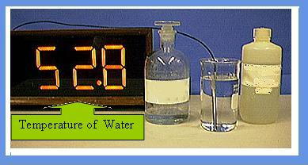
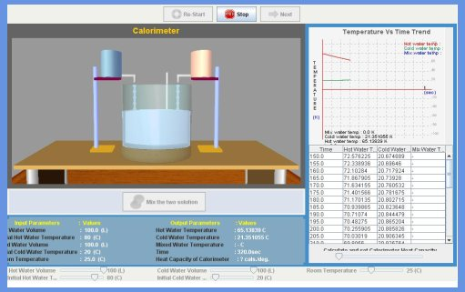

Physical and chemical changes are associated with energy changes. This leads to a change in the energy of the system. It is seen in the form of heat transfer. As example, plants process light energy in the form of chemical bonds inside large macromolecules like carbohydrates, proteins, and fat. And this chemical energy reaches other organisms via the food chain. We can utilize the energy through metabolic activity which releases the energy slowly through chemical reactions. How can we measure this energy change? Calorimetry provides one answer to this problem. An ordinary calorimeter is an insulated flask which can prevent heat from flowing into or out of the system. Any heat generated or absorbed is then going to change the temperature of the contents. This is how we measure the heat change.

The magnitude of measured heat change for a reaction tells us about the strength of associations that are forming or breaking. Thus a simple experiment becomes a source of understanding of the interaction between electrons and nuclei in the molecules forming the substance.
The heat change (absorbed or evolved) associated with a chemical reaction is known as enthalpy of reaction (when the heat change occurs at constant pressure it is equal to enthalpy change). Calorimetry is the science of measuring the heat changes associated with a chemical or physical process. A Calorimeter is a container with good insulated walls to prevent heat loss. It is fitted with a thermometer and a stirrer through a cork top. In order to measure heats of reactions, we carry out the reaction in the calorimeter, and measure the difference in temperature before and after the reaction. The enthalpy exchanged during a reaction is allowed to change the temperature of a quantity of water or the temperature of the mixture itself is followed.
Depending on the kind of the chemical reaction, various enthalpies of reactions such as ‘enthalpy of neutralization’ (for acid-base neutralization reaction), enthalpy of combustion, enthalpy of solution, etc., are determined. In a neutralization reaction, an acid and a base react to produce a salt and water and some heat. The neutralization reaction is an exothermic process.
The heat of neutralization is the heat change that occurs when one gram equivalent of an acid is completely neutralized by a base or vice versa in dilute solution. The neutralization reactions involve the combination of H+ ions of an acid and OH- ions of a base to form water molecules. The heat of neutralization of a strong acid (e.g., HCl) or a strong base (e.g. NaOH) is equal to -57 kJ (negative sign implies heat evolved). It is less than this value for a weak acid or a weak base and also different for different weak acids or bases. For example the heat of neutralization for acetic acid is -54.9 kJ. As weak acids (or weak bases) are not completely ionized in solutions, a small quantity of heat is spent to dissociate the weak acid (or the weak base). Hence the smaller heat of neutralization for acetic acid (CH3COOH).

To measure the heat of neutralisation.


The enthalpy exchanged during a reaction is allowed to increase the temperature of a quantity of water or the temperature of the mixture itself is followed. The temperature change is related to energy units as
E = c m ΔT
The energy change is always presented as kJ mol-1 of the substance or reaction being studied.
Enthalpy of Neutralisation - this is the heat released when 1 mole of water is formed during the neutralisation of strong acid by an alkali, e.g.


1. Run the experiment and note down the temperatures of hot and cold water every 5 minutes (note at least 4 data points)
2. Hit the mix button.
3. Note the temperature of the mixture.
4. Calculate water equivalent of the calorimeter and go to next stage.
5. Now repeat the above procedure for given acid-base pair instead of hot and cold water.
6. Using the water equivalent calculate the heat of neutralisation of the reaction.


1. The reaction for the hydrogenation of acetylene, C2H2 (g) proceeds according to:
C2H2 (g) + 2 H2 (g) → C2H6 (g)
Calculate Δ Ho for this reaction by combining the equations (and Δ Ho s) for the following reactions.
i) 2 C2H2 (g) + 5 O2 (g) → 4 CO2 (g) + 2 H2O (l) Δ Ho = - 2599 kJ
ii) 2 C2H6 (g) + 7 O2 (g) → 4 CO2 (g) + 6 H2O (l) Δ Ho = - 3119 kJ
iii) 2 H2 (g) + O2 (g) → 2 H2O (l) Δ Ho = - 572 kJ
2. Give an example of a physical change that is endothermic.
3. For a reaction occurring at constant pressure, why is it much more convenient to measure the enthalpy change instead of the energy change?

 Experiments
Experiments Feedback
Feedback